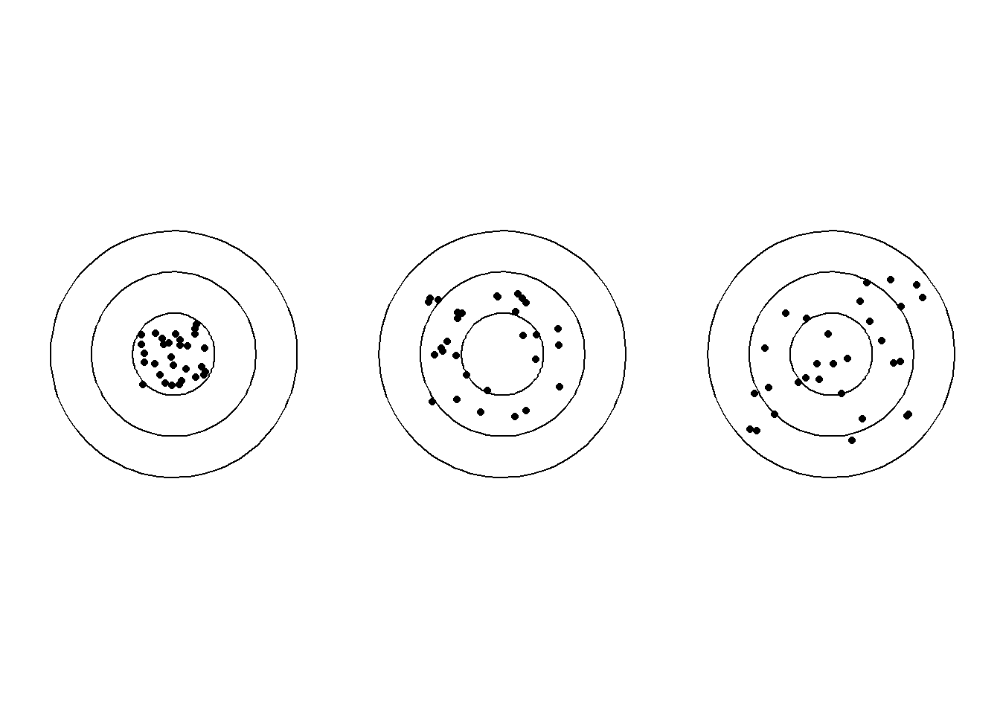
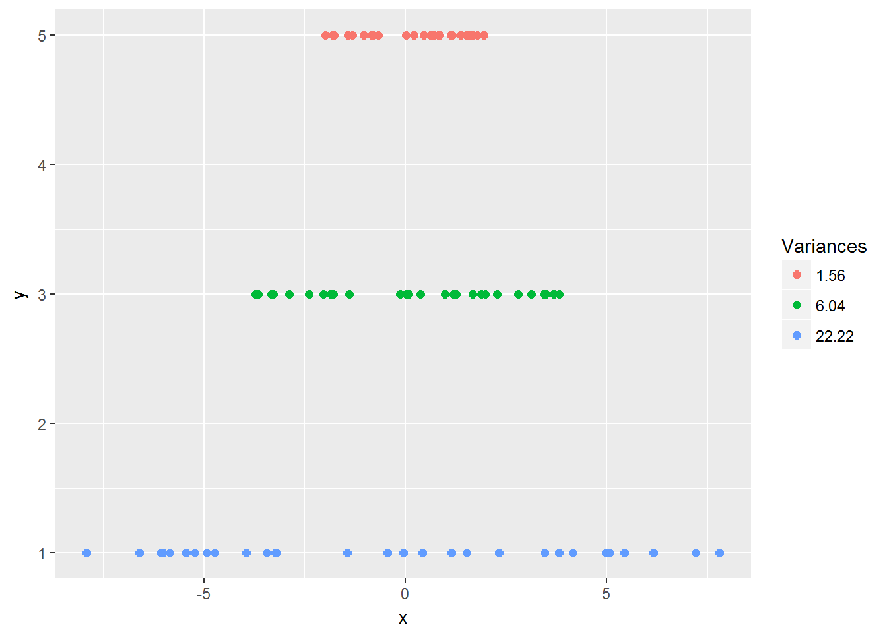
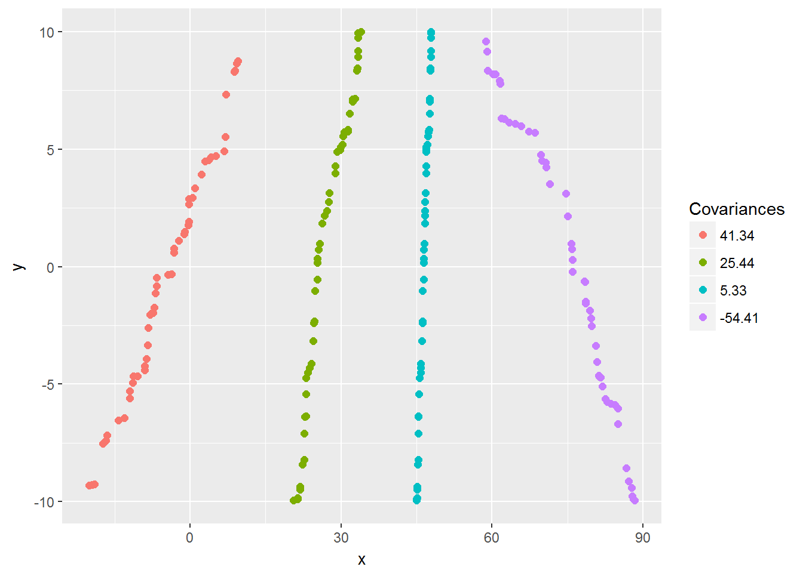
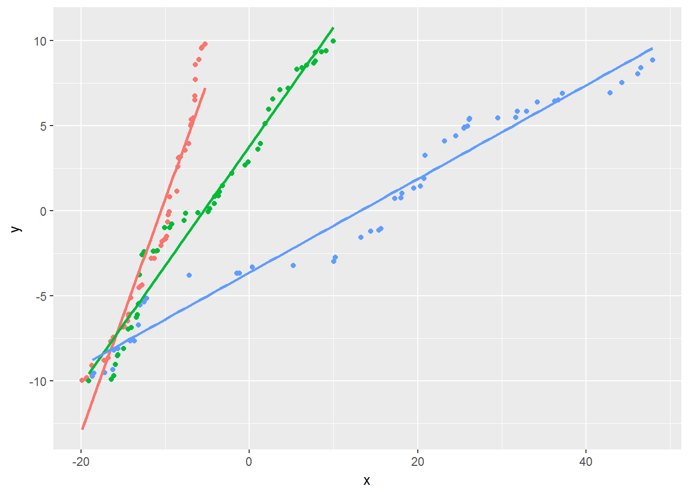

2 Simple Linear Regression
2.1 Overview
Almst all supervised models relate one or more input variables, \(X_1,X_2, \ldots , X_p\), to an output variable, \(Y\), which can be generalized as \[Y = f(X)\] The goal of these models is to estimate the function \(f(X)\) with as much accuracy as possible. In a linear regression model, the assumption is that the input variables are related to the output variables through a linear combination, i.e., addition. The term regression refers to the fact that the output variable can take on any value. This is in contrast to classification models in which the output variable can take on one of a limited set of values. Classification models will be discussed in chapter NEED CHAPTER NAME. When the model is estimating the function for only a single input variable, it is termed simple linear regression and takes the form
\[\begin{equation} Y = a_0 + a_1X \tag{2.1} \end{equation}\]This equation might seem somewhat familiar to you, and by just replacing the letters used for the terms and switching around the order I end up with an equation which we all have encountered in grade school as the equation for a line
\[\begin{equation} y = mx + b \end{equation}\]Who knew we were all doing a form of linear regression so many years ago. Even though the letters used for simple linear regression are different they have the same meaning. \(a_0\) is the intercept and \(a_1\) is the slope of the line. However, unlike in math class where the line perfectly fit the points we were given, when dealing with data points in the real world this is almost never true. This is the reason that I keep using the word estimate. The model might be close but there should always be the expectation that it will not prefectly fit the data. Additionally, if you try to perfectly fit the data you run the risk of overfitting your model, a topic which will be discussed in chapter NEED CHAPTER NAME. So when discussing models applied to real world data the equation for simple linear regression is often written as
\[\begin{equation} Y \approx a_0 + a_1 X \tag{2.2} \end{equation}\]To understand why equation (2.2) is more appropriate than equation (2.1), let’s look at some data. Plotted in the figure below are average temperature readings at JFK airport from January through July of 2017.

Using the least squares method described below I can estimate the linear regression coefficients and overlay the best fit line.
You can see that there is no straight line which would hit all the points, so going back to my original assertion, even the most accurate model could only approximate the output variable given the input variables.
Taking another step back, we have to remember that linear regression is a method of estimating the efficients of equation (2.2), which I can represent by giving the estimated coefficients and estimate output variables tiny hats.
\[\begin{equation} \hat{Y} = \hat{a}_0 + \hat{a}_1 X \tag{2.3} \end{equation}\]2.2 Estimating the Coefficients
2.2.1 Least squares
The general idea of the least squares method is that you want to pick coefficents which minimize the differences between the given output and the output calculated from the right hand side of equation (2.3). This difference between the calculated output variable and the actual output variable is called the residual which is represented by the symbol \(e\).
\[\begin{equation} e = Y-\hat{Y} = Y - \left(\hat{a}_0 + \hat{a}_1 X\right) \tag{2.4} \end{equation}\]The residuals in our previous plot are the distances from the points to the fitted line.

If I then take the square of the residual for each observation and sum them all together I get the residual sum of squares (RSS). Minimizing the RSS is what makes this process “least squares”.
\[\begin{equation} RSS = e_1^2 + e_2^2 + \ldots + e_n^2 = \sum\limits_{i=1}^N e_i^2 \tag{2.5} \end{equation}\]\(e_i\) represents the \(i\)th residual and refers to the difference between the \(i\)th actual output, \(Y_i\), and the \(i\)th predicted output, \(\hat{Y}_i\). In the following section I am going to go, step by step, through two different methods of deriving the least squares coefficients. I find derivations useful for two reaons. The first is that they let you know where the equations come from. If you are reading this book then you are looking to understand modeling on a level deeper than simply, “how do I apply a certain model to my data”. The second reason that I like derivations is that you see the assumptions made in the derivations. This, in my opinion, is essential to being able to smartly use the different models, as you understand when the assumptions are valid and when they are not.
There are multiple methods to solve for the minimum least squares coefficients, most dealing with variations on ordinary least squares using matrix algebra. I will be using matrix algebra to solve for the coefficients when there are multiple inputs but for simple linear regression the following derivation only requires knowledge of partial derivatives.
Derivation 1
Before I start working through the derivation, there are two concepts I want to go through variance and covariance. The reason being that at the end of the derivation the estimate of slope, otherwise known as \(a_1\) can be calculated by dividing the covariance by the variance. When I get to that point I will discuss why this is the case, but I first wanted to make sure that you had a firm grasp on these concepts by themselves. Also, the in depth examination of variance will inform later parts of the derivation.
The variance is a measure of spread for a variable, i.e., the distance of each value from the sample mean value. An intuitive example is shown below where the variance of the points on the targets increases from left to right.

Mathematically the variance, in one dimension, is calculated as follows:
\[\begin{equation} Var(x) = \sigma^2 = \frac{1}{N}\sum\limits_{i=1}^N \left(x_i - \mu\right)\left(x_i - \mu\right) = \frac{1}{N}\sum\limits_{i=1}^N \left(x_i - \mu\right)^2 \tag{2.6} \end{equation}\]Where \(\mu_x\) is the notation for the population mean value of x, which is discussed in the next paragraph. Squaring the difference serves two functions, the first is to equally weight positive and negative contributions to the variance. Without the square if a variable was evenly distributed around zero, regardless of its spread it would have a variance of zero. The second consequence is that as the distances increase the variance increases exponentially, as seen in the following graph:

However, there is a problem with using equation (2.6), it requires that I already know the population mean. The population mean is the mean value given a set of numbers or values. The issue is that most of the time with data we are dealing with a small subsample of data and not the full set of data. For example, if I wanted to calculate the average rainfall in New York City yesterday, I would need to measure the rainfall in every location throughout the city. This is obviously impossible, which is why some people refer to the population mean as the omniscient mean. Instead, what I can do is measure the rainfall at certain points throughout the city and estimate the population mean using the sample mean, which is simply the mean calculated from the population sample collected. The difference between population mean and sample mean, might seem like simply a matter of semantics, but it has important ramifications and necessitates corrections. The variance using the sample mean, termed the sample variance, very similar to
\[\begin{equation} Var(\bar{x}) = s^2 = \frac{1}{N-1}\sum\limits_{i=1}^N \left(x_i - \bar{x}\right)\left(x_i - \bar{x}\right) = \frac{1}{N-1}\sum\limits_{i=1}^N \left(x_i - \bar{x}\right)^2 \tag{2.7} \end{equation}\]where \(s^2\) is the sample variance and \(\bar{x}\) is the sample mean. For a full derivation of equation (2.7) see Population Vs. Sample Variances.
Unlike the variance which is a measure of how a single variable varies with regards to itself, the covariance is a measure of how two variables, \(\mathbf{X}\) and \(\mathbf{Y}\), vary with respect to each other. If the variables increase in value together and decrease together, i.e., when one variable increases the other variable increases as well, the covariance will be larger. If instead one variable increases while the other decreases then the covariance will be smaller. To actually calculate the covariance you can use the following formula:
\[\begin{equation} Cov(x) = \frac{1}{N}\sum\limits_{i=1}^N \left(x_i - \mu_x\right)\left(y_i - \mu_y\right) \tag{2.8} \end{equation}\]If equation (2.8) looks suspiciously like equation (2.6), that’s because the formula for the variance is just a special case of the formula for the covariance when dealing with a single variable. To get an intuitive sense of what the covariance represents here are the covariances for a few different series of points.

As you can see, as the slope of the line increases from the red to the green to the blue points, the covariance decreases. This is because for the red points, a change in \(y\) value of 5 roughly corresponds to a change in \(x\) value of 7 or 8, but for the green points, the same change in \(y\) of 5 corresponds to a change in \(x\) of only about 3 or 4. What this means is that for an increased slope the \(x\) values are changing at a slower rate and so this decreases their term in the covariance formulation. The purple points on the right show what happens to the covariance when the tyhe two variables move in opposite direction. The magnitutde is the same for the purple and red points, but while the red covariance is positive the purple is negative. This is because, with respect to each variable’s mean value, while \(x\) is positive, \(y\) is negative and vice versa.
Just like with the variance, I have to distinguish between the population covariance, equation (2.8), and the sample covariance:
\[\begin{equation} Cov(x) = \frac{1}{N-1}\sum\limits_{i=1}^N \left(x_i - \bar{x}\right)\left(y_i - \bar{y}\right) \tag{2.9} \end{equation}\]The main difference once again is the replacement of \(n-1\) in the denominator in lieu of \(n\), for the same reason as the variance.
Now that I have gone over the concepts of variance and covariance, I just need to go over some quick identities before I derive the least squares coefficients.
\[\begin{equation} \begin{split} \frac{1}{N}\sum\limits_{i=1}^N y_i & = \bar{y} \Longleftrightarrow \sum\limits_{i=1}^N y_i & = N\bar{y} \\ \frac{1}{N}\sum\limits_{i=1}^N x_i & = \bar{x} \Longleftrightarrow \sum\limits_{i=1}^N x_i & = N\bar{x} \\ \end{split} \tag{2.10} \end{equation}\]Equation (2.10) is just a simple variation on the definition of \(\bar{X}\). The next two sets of identities are expansions of the variance and covariance equations and the equivalent ways they appear. I am going to be removing the denominator for the sake of simplicity, also because as you will soon see it will be divided out in the final derivation.
\[\begin{align} \sum\limits_{i=1}^N (x_i-\bar{x})(x_i - \bar{x}) &= \sum\limits_{i=1}^N x_i^2 - 2\sum\limits_{i=1}^N \bar{x}x_i + \sum\limits_{i=1}^N \bar{x}^2 \\ &= \sum\limits_{i=1}^N x_i^2 - 2N\bar{x}^2 + N\bar{x}^2 \\ &= \sum\limits_{i=1}^N x_i^2 - \sum\limits_{i=1}^N \bar{x}x_i = \sum\limits_{i=1}^N x_i\left(x_i-\bar{x}\right) \tag{2.11} \end{align}\]Now repeating the process for the covariance:
\[\begin{align} \sum\limits_{i=1}^N (x_i-\bar{x})(y_i - \bar{y}) &= \sum\limits_{i=1}^N x_iy_i - \sum\limits_{i=1}^N \bar{x}y_i - \sum\limits_{i=1}^N \bar{y}x_i + \sum\limits_{i=1}^N\bar{x}\bar{y}\\ &=\sum\limits_{i=1}^N x_iy_i - \bar{x}\sum\limits_{i=1}^N y_i - \bar{y} \sum\limits_{i=1}^N x_i + \bar{x}\bar{y}\sum\limits_{i=1}^N 1 \\ &=\sum\limits_{i=1}^N x_iy_i -N\bar{x}\bar{y} - N\bar{x}\bar{y} + N\bar{x}\bar{y} \\ &=\sum\limits_{i=1}^N x_iy_i - N\bar{x}\bar{y} \\ &=\sum\limits_{i=1}^N x_iy_i - \sum\limits_{i=1}^N \bar{y}x_i = \sum\limits_{i=1}^N x_i\left(y_i - \bar{y}\right) \tag{2.12}\\ &= \sum\limits_{i=1}^N x_iy_i - \sum\limits_{i=1}^N \bar{x}y_i = \sum\limits_{i=1}^N y_i\left(x_i - \bar{x}\right) \tag{2.13}\\ \end{align}\]This series of equations is simply going back and forth between equivalent values using the relationships established in equation (2.10). I can split and rejoin summations because the operations are all linear. At the end of the above series I end up with two relationships which will be needed later.
Now with all these tools, let’s attack this derivation. If you remember back from your high school and college math classes, when we are trying to find the minimum value of a function we take the derivative, set it equal to zero and solve for the parameter(s) of interest. Thankfully, the process hasn’t changed since then. Also, since there are multiple parameters of interest, i.e., \(\hat{a_0}\) and \(\hat{a_1}\), I will need to use partial derivatives. First I want to rewrite equation (2.5) in a slightly more derivative friendly way.
\[\begin{equation} S = \sum\limits_{i=1}^N \left(y_i - \hat{a}_0 + \hat{a}_1 x_i \right)^2 \tag{2.14} \end{equation}\]Starting with \(\hat{a_0}\)
\[\begin{align} \frac{\partial S}{\partial \hat{a}_0} = -2 &\sum\limits_{i=1}^N \left(y_i - \hat{a}_0 - \hat{a_1}x_i\right)\\ &\sum\limits_{i=1}^N \left(y_i - \hat{a}_0 - \hat{a_1}x_i\right) = 0 \\ &\sum\limits_{i=1}^N y_i - \hat{a}_0 \sum\limits_{i=1}^N 1 - \hat{a_1} \sum\limits_{i=1}^N x_i = 0 \\ & N\bar{y} - N\hat{a}_0 - N\hat{a_1}\bar{x} = 0 \\ & \bar{y} - \hat{a}_0 - \hat{a_1}\bar{x} = 0 \\ & \hat{a}_0 = \bar{y} - \hat{a_1}\bar{x} \tag{2.15} \end{align}\]The outcome all these steps is something that seems relatively simple, that the estimate of the intercept is just based on the estimated slope and the average input and output values. That being said it does make sense, as the intercept serves to horizontally shift the line. Once we have estimated the slope we want an intercept which positions the resulting line to go through the center of data as calculated by the average position. Now that I have estimated \(\hat{a}_0\), I can estimate \(\hat{a}_1\)
\[\begin{align} \frac{\partial S}{\partial \hat{a}_1} = -2 &\sum\limits_{i=1}^N x_i \left(y_i - \hat{a}_0 - \hat{a_1}x_i\right)\\ &\sum\limits_{i=1}^N x_i \left(y_i - \hat{a}_0 - \hat{a_1}x_i\right) = 0 \\ &\sum\limits_{i=1}^N x_iy_i - \hat{a}_0 \sum\limits_{i=1}^N x_i - \hat{a_1} \sum\limits_{i=1}^N x_i^2 = 0 \\ &\sum\limits_{i=1}^N x_iy_i = \hat{a}_0 \sum\limits_{i=1}^N x_i + \hat{a_1} \sum\limits_{i=1}^N x_i^2 \\ &\sum\limits_{i=1}^N x_iy_i = N\hat{a}_0 \bar{x} + \hat{a_1} \sum\limits_{i=1}^N x_i^2 \\ &\sum\limits_{i=1}^N x_iy_i = N\left(\bar{y} - \hat{a_1}\bar{x}\right)\bar{x} + \hat{a_1} \sum\limits_{i=1}^N x_i^2 \\ &\sum\limits_{i=1}^N x_iy_i = N\bar{y}\bar{x} - N\hat{a_1}\bar{x}^2 + \hat{a_1} \sum\limits_{i=1}^N x_i^2 \\ &\sum\limits_{i=1}^N x_iy_i = \sum\limits_{i=1}^N y_i \bar{x} - \hat{a_1}\sum\limits_{i=1}^N x_i \bar{x} + \hat{a_1} \sum\limits_{i=1}^N x_i^2 \\ &\sum\limits_{i=1}^N x_iy_i - \sum\limits_{i=1}^N y_i \bar{x} = \hat{a_1} \sum\limits_{i=1}^N x_i^2 - \hat{a_1}\sum\limits_{i=1}^N x_i \bar{x} \\ &\sum\limits_{i=1}^N y_i\left(x_i - \bar{x}\right) = \hat{a_1}\sum\limits_{i=1}^N x_i \left(x_i - \bar{x}\right) \\ &\sum\limits_{i=1}^N \left(x_i-\bar{x}\right)\left(y_i-\bar{y}\right) = \hat{a_1}\sum\limits_{i=1}^N \left(x_i - \bar{x}\right)^2 \\ &\hat{a_1} = \frac{\sum\limits_{i=1}^N \left(x_i-\bar{x}\right)\left(y_i-\bar{y}\right)}{\sum\limits_{i=1}^N \left(x_i - \bar{x}\right)^2} \\ &\hat{a_1} = \frac{Cov\left(\mathbf{X},\mathbf{Y}\right)}{Var\left(\mathbf{X}\right)} \tag{2.16} \end{align}\]The fact that the estimate of \(\hat{a}_1\) is the covariance divided by the variance seems like a very interesting result, but why is that the case? If the covariance is the degree to which two variables vary with each other and the variance is the degree to which a single varialbe varies than the ratio of the covariance to the variance is the degree to which two variables vary reduced by the degree to which the input variable varies within itself. If you think back to our discussion of covariance, as the slop increases the covariance decreases, because there is less variation within the input variable, but if we divide by the variance of the input variable this should correct for that diminishing covariance. The following graph calculates the covariance, variance and their ratio for three sets of data points.
You can see that as the slop decreases both the covariance and variance increase, but since the covariance is only increasing linearly, while the variance is increasing exponentially, the overall ratio decreases.
Putting these two estimates together I can now perform the least squares estimation of simple linear regression. The following plot demonstrates the least squares fit for three sets of points. The code to run this model is discussed below in the section NEED SECTION NAME

2.3 Model Accuracy
2.3.1 Accuracy of the Coefficients
While the ability to estimate the coefficients is very powerful, the question is how accurate is the estimation given the data points. You can see from equations (2.15) and (2.16) that the least squares method of linear regression will always give an estimate, but with what confidence can we rely on that estimate? One metric commonly used is the standard error, which is the standard deviation of the sampling distribution. This is not the regular standard deviation which you might be used to. The standard deviation is the degree to which sample vary about the mean and mathematically is the square root of the variance. The standard error is the variation of the sample mean from the population mean, in other words, how close the sample mean is to the true population mean. To get an intuitive understanding of what I mean by variation of the sample mean, I am going to calculate the mean of different size samples drawn from a population of one hundred thousand points.
The standard error, in this case specifically the standard error of the mean, is the standard deviation of each set of colored points. Given a population of one hundred thousand data points you can see that the sample size has a large impact on the standard deviation of the sample mean. The greater percentage of points from the population that are used in the sample, the narrower the range of sample means. Just like the standard deviation is the square root of the population variance of the population, so too the standard error is the square root of the sample variance.
\[\begin{align} SE(\bar{x}) &= \sqrt{Var(\bar{x})} = \sqrt{s^2} \\ &= \sqrt{\frac{1}{N-1}\sum\limits_{i=1}^N \left(x_i - \bar{x}\right)^2} \tag{2.17} \end{align}\]As matches the graphical intuition, the larger the sample size the smaller the standard error of the sample mean. Given that sampling and sample size affects the mean, we can expect that they should affect our coefficient estimates. Similar to the previous graph, I can estimates the coefficients of multiple sample sets all drawn from a single linear distribution.
How can we use this information to estimate the standard error
When more input variables are added the simple part of the term is dropped and it is referred to as general regression and takes the form
\[\begin{equation} Y = a_0 + a_1\cdot X_1 + a_2\cdot X_2 + \ldots a_p\cdot X_p + \epsilon = a_0 + \sum\limits_{i=1}^p(a_i\cdot X_i) + \epsilon \tag{2.18} \end{equation}\]Just as in simple linear regression, the \(a\)’s in front of the input variables control the slope of the line, \(a_0\) controls the intercept of the line. Taken together the \(a\)’s are referred to as the coefficients. \(\epsilon\) is the error as measured by the distance from the points on the right hand side to the true values on the left hand side of the equation.
Going back to our original simple linear regression problem involving temperature measurments. Since we know that the relationship between the input and output variables is not strictly goverened by the equation \(F = \dfrac{9}{5}\cdot C + 32\), we need a method of determining the coefficients which actually govern the relationship between our given input and outputs.
2.4 Variable parameters
The values of the input and output parameters in a linear regression model are as follows. - Input Values can be any of the following - numerical values, also referred to as quantitative values - Dummy va
You can label chapter and section titles using {#label} after them, e.g., we can reference Chapter ??. If you do not manually label them, there will be automatic labels anyway, e.g., Chapter ??.
Figures and tables with captions will be placed in figure and table environments, respectively.
Reference a figure by its code chunk label with the fig: prefix, e.g., see Figure ??. Similarly, you can reference tables generated from knitr::kable(), e.g., see Table ??.
You can write citations, too. For example, we are using the bookdown package [@R-bookdown] in this sample book, which was built on top of R Markdown and knitr [@xie2015].